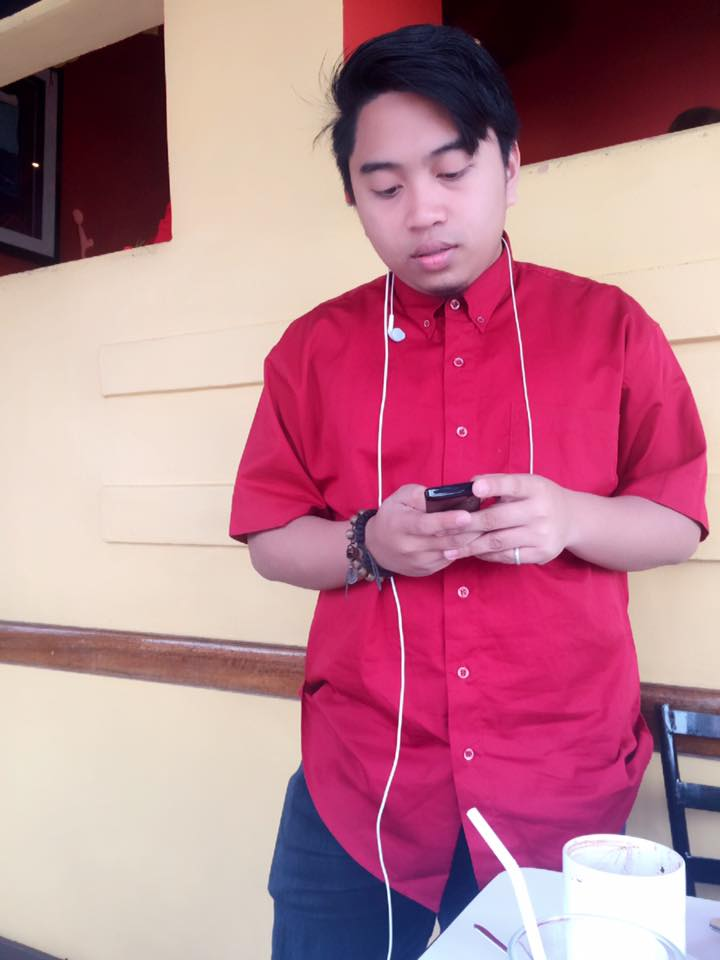

Cabantac, Emmanuel Alfonso B.

Hello, I am a BSIT student of Saint Louis University, a good and caring student. I do follow the rules and regulation of SLU but there are some instance that I broke some. For example, I do stay outside the corridor the reason is that I was waiting for the previous class to dismiss because the room that they are using will be the room for our next class. Follow the rules and regulation of the university to have a peaceful university.
Guieb, Rey Meljohn S.

I am a BSIT student and a law abiding person that follow the rules of Saint Louis University. Be a considerate person and a type of person that knows the right thing to do. I WAS once a bad guy and a bully. But be like me, do not be afraid to change into something good and spread the love and peace in the campus and also in the outside world. Peace!
Lopez, Ramon

Hello there ! I'm currently taking up the course BSIT . Peace and Order was not really my thing until I became a student of Saint Louis University , I was once a kid who always loved to do things before planning about it , in short I was really hyped to do all kinds of things not considering if its proper or not, but since I became a part of SLU , I felt that the act of being good and being able to abide by the rules made me happier than when I was doing the exact opposite . Now I aim to have a university with peace and order , A peaceful community is a healthy community . Make peace not war :)
Testado, Janriel
I, Janriel Testado am a BSIT student. A full pledged Louisian in mind and spirit, growing in the loving presence of the Lord. Instilled with Christian values that the university upholds as a Christian Institution. I am a proud Louisian, who dreams of having a campus that is conducive for learning. Peaceful and Orderly. One heart One mind. One School. Janriel Testado, Peacemaker!
Torres, Princess
I am a BSIT student 3rd year at Saint Louis University. I am a good Louisian because I know how to act accordingly and righteously. I follow the rules and regulation that will help us and also the University to attain peace and obtain order. So be a good Louisian to keep peace and order! Spread PEACE AND LOVE!

{kind=link}
{kind=link}
{kind=link}